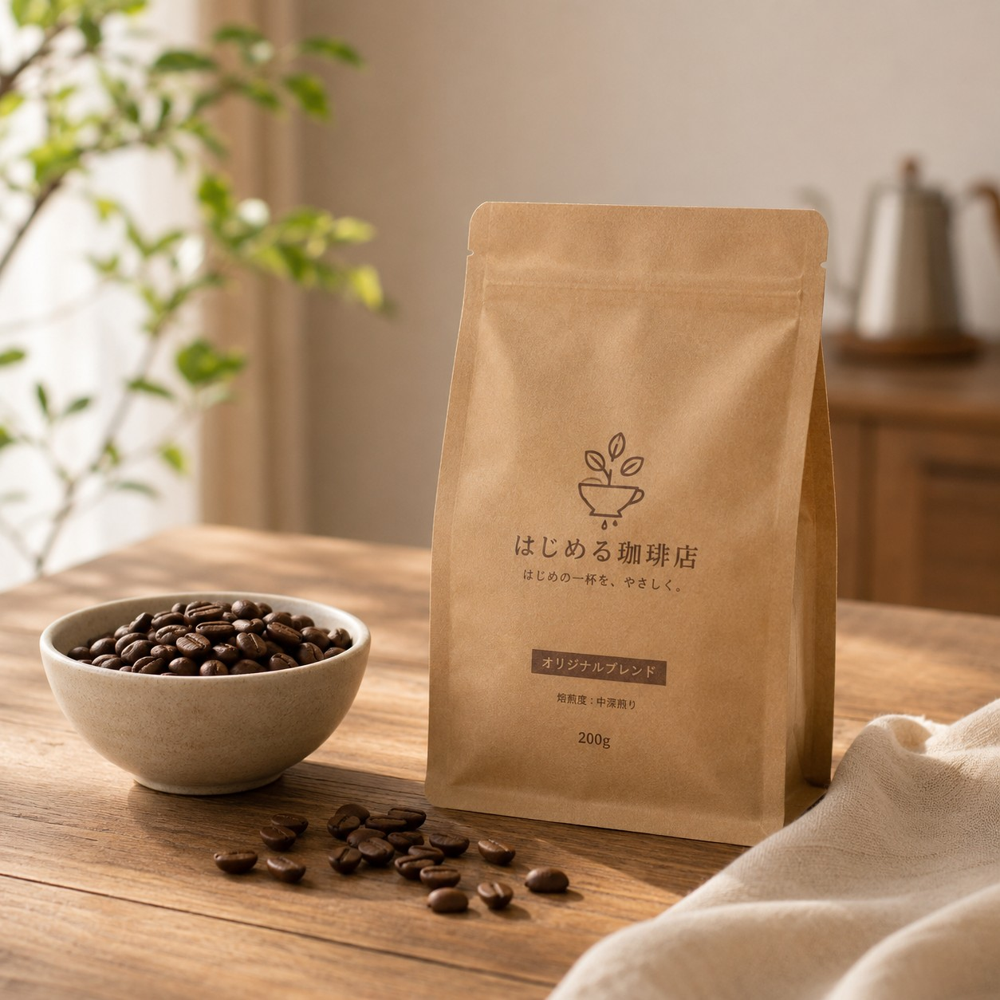
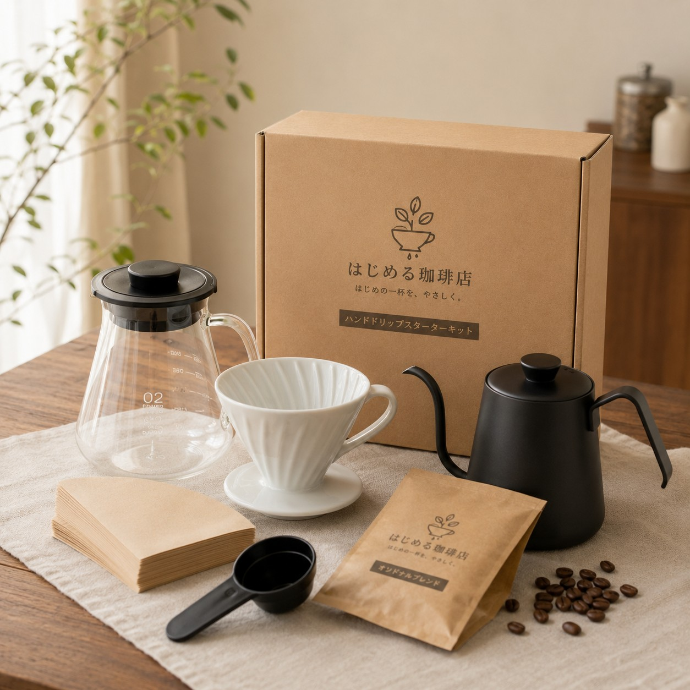

01
選ぶ
豆や道具の違いが分からなくても大丈夫。 あなたに合った一杯を見つけるところから お手伝いします。
珈琲診断をする →FOR COFFEE BEGINNERS
豆も、道具も、淹れ方も。
初心者の「分からない」に寄り添いながら、
あなたに合うコーヒーの始め方をご案内します。
01 / CONCEPT
「豆はどれを選べばいい？」
「道具は何が必要？」
「どうやって淹れればいい？」
はじめる珈琲店は、
そんな最初の「分からない」に寄り添う
コーヒー初心者のためのお店です。
商品を選ぶことから、淹れること、
そして楽しむことまで。
あなたの「はじめて」を、
ひとつずつやさしくお手伝いします。
03 / PRODUCTS
初心者でも選びやすい珈琲豆と、
必要な道具を揃えたスターターキットをご用意しています。

COFFEE BEANS
苦味・酸味・香りのバランスがよく、 毎日飲みやすい初心者向けのブレンドです。

STARTER KIT
ドリッパー・サーバー・ペーパー・珈琲豆を、 ひとつにまとめた初心者向けセットです。
04 / WORKSHOP
はじめてでも大丈夫。
少人数のハンドドリップ講習会で、
豆の量やお湯の注ぎ方など、
おいしく淹れるための基本を
ゆっくり学べます。
初心者向け
少人数制
道具の使い方から学べる
05 / COFFEE DIAGNOSIS
いくつかの簡単な質問に答えるだけ。
味の好みや普段の飲み方から、
あなたに合うコーヒーをご案内します。
01 質問はかんたん
02 約1分で診断
03 おすすめ商品が分かる
06 / COLUMN
豆の選び方や淹れ方の基本、
コーヒーのある暮らしを楽しむヒントをお届けします。